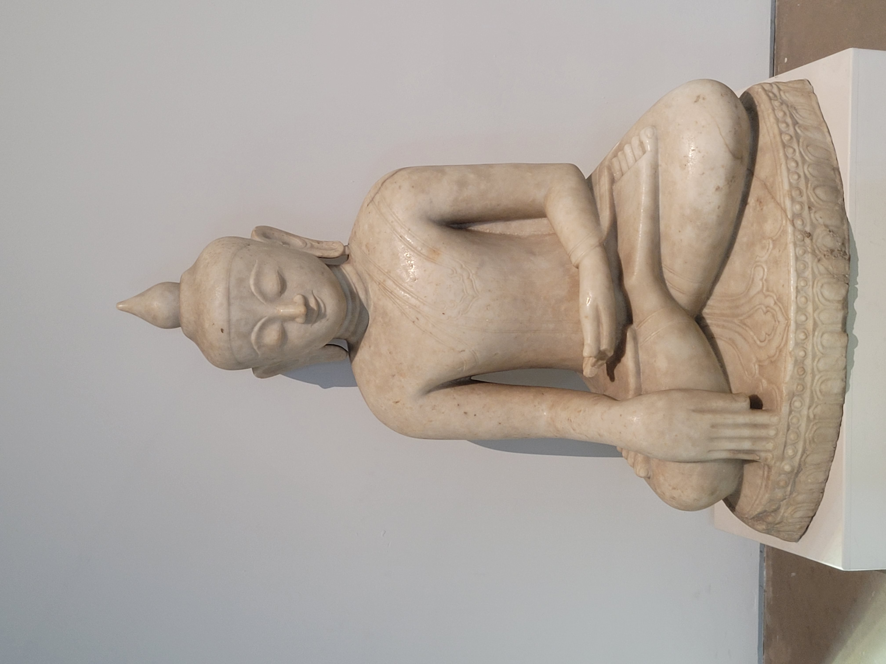

<!DOCTYPE html>
<html lang="en">
<head>
    <meta charset="UTF-8">
    <meta name="viewport" content="width=device-width, initial-scale=1.0">
    <title>Document</title>
</head>
<body>
    
</body>
</html>
  <title>GREAT WEEKEND IN GLASGOW</title>
  <link rel="stylesheet" href="styles.css">
  <br>
  <ul>
    <li><a href="index.html">Home</a></li>
    <li><a href="burrell.html">Burrell</a></li>
    <li><a href="galleryofmodernart.html">Gallery of Modern Art</a></li>
    <li><a href="riverside.html">Riverside</a></li>
    <li><a href="stmungos.html">St.Mungos</a></li>
    <li><a href="Kelvingrove.html">Kelvingrove Museum</a></li>
  </ul>
  <div class="row">
    <div class="column">
      
      
      
    </div>
    <div class="column">
      
      
      
    </div>
    <div class="column">
      
      
      
    </div>


  <P><strong>History:</strong>
  The Riverside Museum was built in 2011 in the Partick area of the city, designed by Zaha Hadid Architects.
   It won the 2013 European Museum of the Year. The museum continues the legacy of the historical Glasgow
    Museum of Transport.</P>
  
  <p>The original Glasgow Museum of Transport was located in Pollokshields in the southside of the city, created 
  following the closure of Glasgow's tram system. The Coplawhill tram depot on Albert Drive was converted into
   the city’s first transport museum in 1962. It later moved to Kelvin Hall in the west of the city, opposite
    Kelvingrove Art Gallery, before finally closing in 2010 to make way for the new Riverside Museum.
  
  Kelvin Hall itself was built in 1927 as an exhibition centre and was later converted to house the Museum of
   Transport before its closure in 2010. The Riverside Museum opened at a cost of £74 million at the meeting 
   point between the River Kelvin and the River Clyde.</p>
  
  <p><strong>Exhibits:</strong></p>
  <p>The Riverside Museum showcases all forms of transportation, from horse-drawn carriages and the first pedal 
  bikes to modern Scottish-built cars and classic trains. Also located outside is the Tall Ship, although it
   is currently under renovations and may not be open to the public.</p>
  
  <p><strong>Visitor Information:</strong></p>
  <p>Opening Hours:
  Monday - Thursday, Saturday: 10:00am - 5:00pm
  Friday, Sunday: 11:00am - 5:00pm
  Accessibility & Transport:
  The museum is fully accessible from both entrances with lifts to the first floor.</p>
  <p><strong>Nearby transport options include:</strong></p>
  <p>Govan underground station (5-minute walk over the Govan-Partick bridge)
  Partick rail station (10-minute walk)
  Buses that serve the museum include the 100 Riversider and city sightseeing buses.
  Paid parking is available onsite.</P
  
  
   
 
  <footer>©All Rights Reserved</footer>
</div>
<div class="logo2">
  
</div>
</head>
<body>